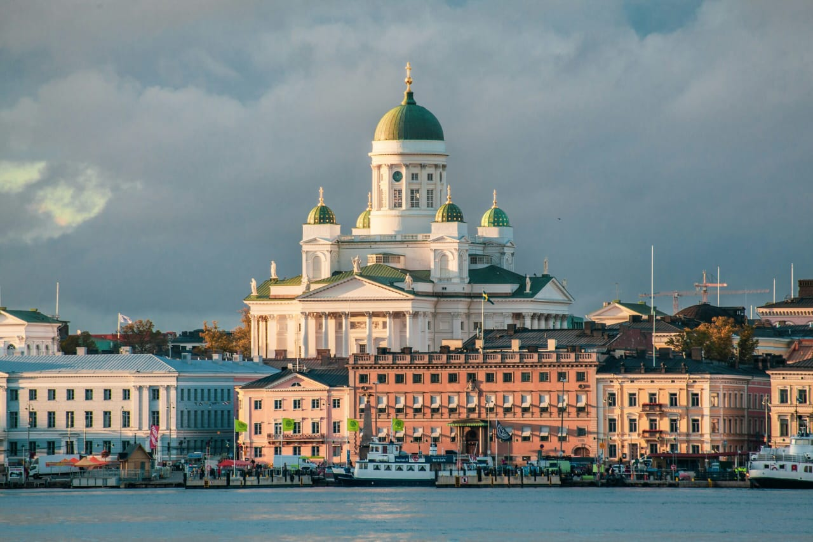
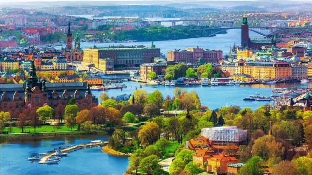
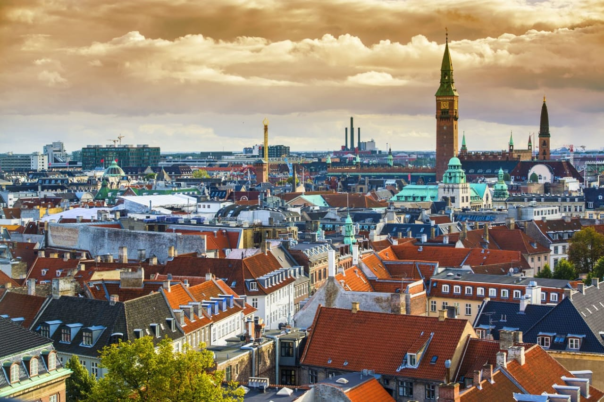
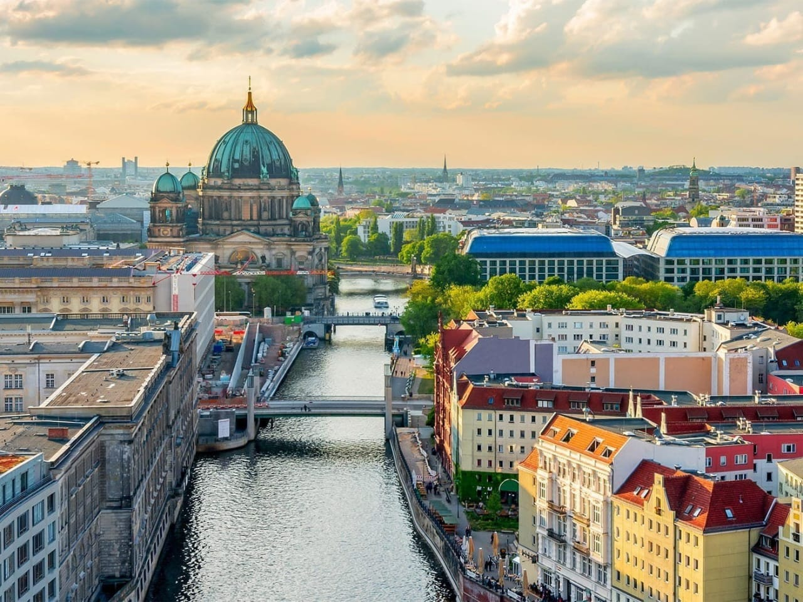
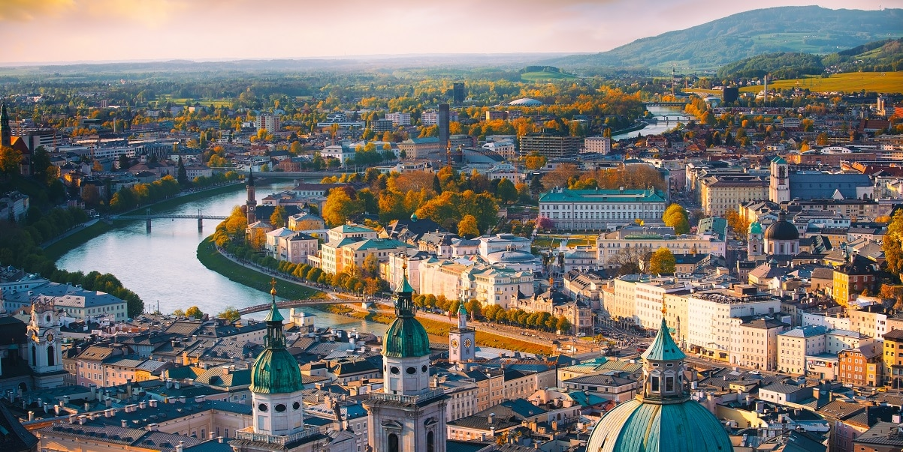
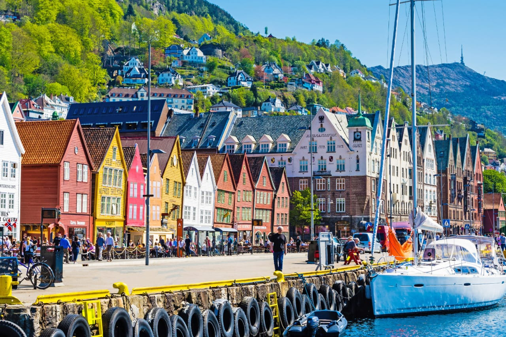
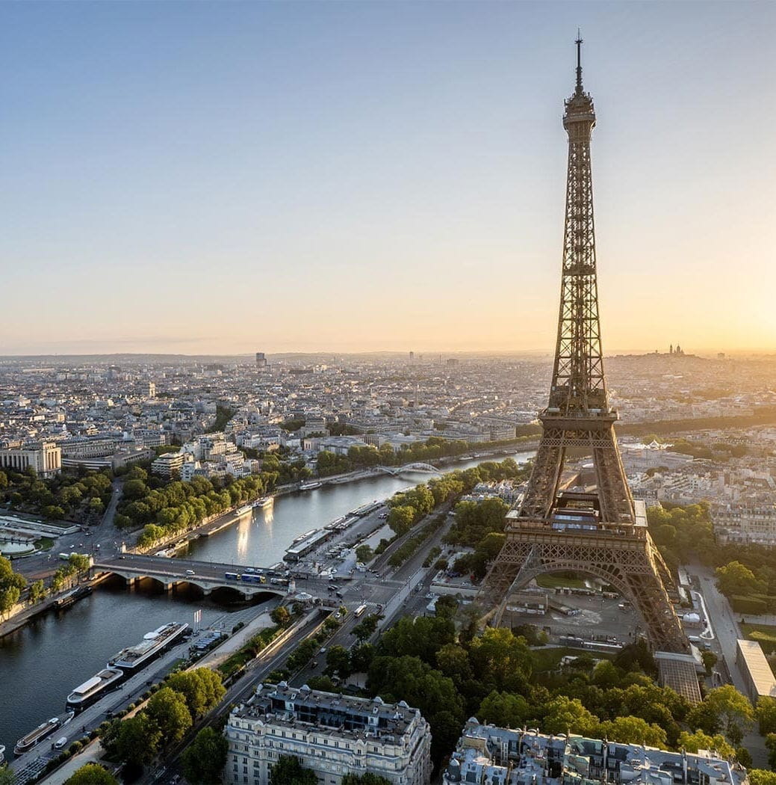

O crescimento organizado e bem estruturado das cidades é uma das características presentes nos países mais sustentáveis do mundo. Além disso, eles promovem ações de baixo impacto ambiental, valorizam a cultura local e compreendem os direitos dos cidadãos.
Para entrar na lista¸ os países precisam fazer o possível para alcançar todos os 17 Objetivos de Desenvolvimento Sustentável da ONU. Atualmente, cerca de 193 países membros das Nações Unidas participam deste movimento para um desenvolvimento sustentável.
A representação do quão próximo os países estão de alcançar todos os 17 ODSs, é dada por pontos. A pontuação vai de 0 (o pior) a 100 (o melhor) pontos. Em 2021, foi divulgado o Relatório de Desenvolvimento Sustentável das Nações Unidas, confira os 10 países mais sustentáveis do mundo.
Finlândia – 85.9 pontos

A Finlândia zerou a pobreza, atingiu as metas de qualidade de educação, água limpa e saneamento básico. Também investe em energia limpa e segue caminhando positivamente pelos demais objetivos. Os maiores desafios da Finlândia são relacionados ao combate às alterações climáticas e, consumo e produção responsável.
Suécia – 85.6 pontos

A Suécia erradicou a pobreza, atingiu o objetivo da igualdade de gênero e oferece energia limpa acessível. Além disso, investe em indústria, inovação e infraestrutura. Os maiores desafios ficam por conta de não atingir o objetivo da fome zero. Além de dificuldades em lidar com consumo e produção responsáveis. O combate às alterações climáticas também dificultam o aumento dos pontos, bem como o cuidado com a vida aquática e terrestre.
Dinamarca – 84.9 pontos

A Dinamarca venceu os objetivos relacionados à ausência de pobreza e a acessibilidade de energia limpa. Além de conseguir a redução de desigualdades. Os desafios para melhorar ficam por conta, principalmente, da fome zero, da responsabilidade de consumo e produção. Além de mudanças efetivas para ajudar a frear as mudanças climáticas.
Alemanha – 82.5 pontos

Apesar de a Alemanha ainda não vencer seus objetivos, tem conseguido resultados bastante relevantes em 5 objetivos. Por isso, os destaques ficam por conta da acessibilidade à energia limpa, a oferta de emprego digno e bom crescimento econômico. Além da melhora na paz, justiça e parcerias para colaboração das metas. Os principais desafios ficam por conta da sustentabilidade na produção e consumo, e as ações quanto às alterações climáticas.
Bélgica – 82.2 pontos
A Bélgica atingiu o seu objetivo quanto à erradicação da pobreza. Além disso, tem conseguido bons resultados no que condiz as ações de igualdade de gêneros. Também tem melhorado na geração de empregos dignos, crescendo economicamente e na redução de desigualdades. Os maiores desafios estão no consumo e produção responsáveis, além das ações para o combate às alterações climáticas.
Áustria – 82.1 pontos

Os objetivos da Áustria foram alcançados em 3 áreas: erradicação da pobreza, acessibilidade de energia limpa, paz e justiça. Além delas, tem conseguido bons resultados na formação de cidades e comunidades sustentáveis. Os maiores desafios para a Áustria ficam por conta da ausência de parcerias em prol de metas. Também faltam mais mudanças significativas no consumo e produção responsáveis, bem como o combate às alterações climáticas.
Noruega – 82.0 pontos

A Noruega se destaca por atingir o objetivo da erradicação da pobreza, oferecer boa saúde e bem-estar, além da igualdade de gêneros. Também oferece energia limpa acessível, reduziu a desigualdade e tem feito boas parcerias em prol das metas. Para completar, tem conseguido bons resultados quanto à sustentabilidade nas cidades. Os grandes desafios ficam por conta de eliminar a fome, ter uma melhor relação com os animais terrestres. Por fim, o combate às alterações climáticas e a responsabilidade no consumo e produção estão atrapalhando a melhora da posição do país.
França – 81.7 pontos

O objetivo da França quanto à erradicação da pobreza foi atingido. Enquanto isso, a infraestrutura também tem ganhado notoriedade, bem como a igualdade de gênero. Os principais desafios ficam por conta da ausência de mais ações no combate às alterações climáticas, bem como a responsabilidade no consumo e produção.